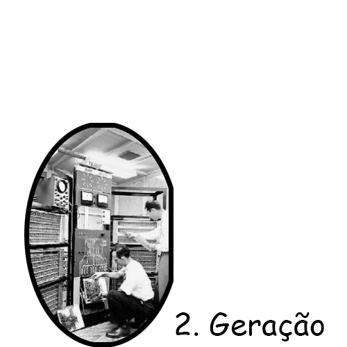
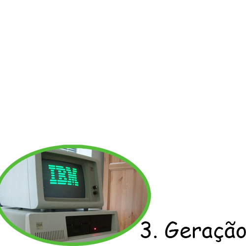
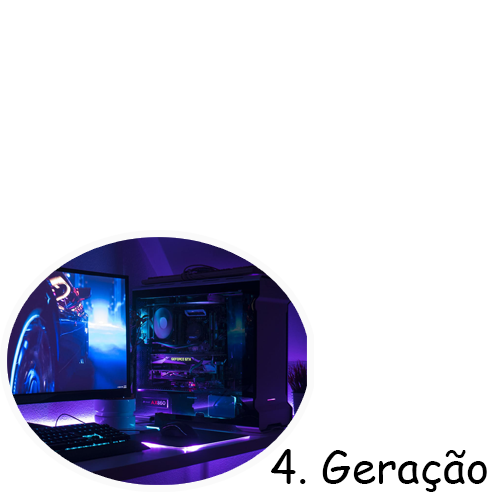
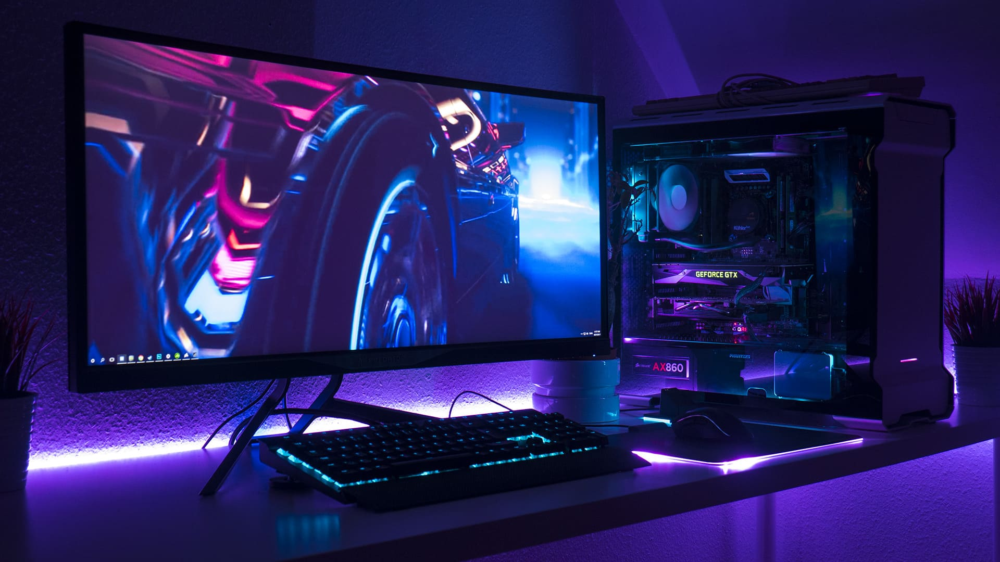

O computador é uma máquina eletrônica que permite processar dados. O termo provém do latim computare (“calcular”). Um computador é composto por uma série de circuitos integrados e outros componentes relacionados, que possibilitam a execução de uma variedade de sequências ou rotinas de instruções indicadas pelo utilizador. Estas sequências são sistematizadas em função de uma grande variedade de aplicações práticas e determinadas, num processo que se denomina programação.

O primeiro computador foi criado entre 1943 e 1946 e se chamava Eletronic Numerical Integrator and Computer — ENIAC. Para o seu desenvolvimento, foi investido cerca de 6 milhões de dólares e seu funcionamento dependia de uma série de fatores, como 200 mil watts de energia. Um fator de grande importância é a memória, algo que não tinha na época do ENIAC. Cerca de 10 anos depois, foi lançado o RAMAX 305, uma máquina de armazenamento em disco feito pela IBM. No começo, só empresas e certas instituições faziam uso de um computador e, com o passar do tempo, essa tecnologia seria acessada por todos.

Os computadores de primeira geração funcionavam por meio de circuitos e válvulas eletrônicas. Possuíam o uso restrito, além de serem imensos e consumirem muita energia. Um exemplo é o ENIAC (Eletronic Numerical Integrator and Computer) que consumia cerca de 200 quilowatts e possuía 19.000 válvulas.
Ainda com dimensões muito grandes, os computadores da segunda geração funcionavam por meio de transistores, os quais substituíram as válvulas que eram maiores e mais lentas. Nesse período já começam a se espalhar o uso comercial.
Os computadores da terceira geração funcionavam por circuitos integrados. Esses substituíram os transistores e já apresentavam uma dimensão menor e maior capacidade de processamento. Foi nesse período que os chips foram criados e a utilização de computadores pessoais começou.
Com o desenvolvimento da tecnologia da informação, os computadores diminuem de tamanho, aumentam a velocidade e capacidade de processamento de dados. São incluídos os microprocessadores com gasto cada vez menor de energia. Nesse período, mais precisamente a partir da década de 90, há uma grande expansão dos computadores pessoais.
Todos sabemos que desde o momento em que clicamos no botão para ligar o computador, este começa a fazer uma série de operações até chegar ao Sistema Operativo. Hoje vou-vos ensinar como funciona um computador, desde os seus principais componentes aos processos que este tem que fazer. Também te vou falar sobre a estrutura de um computador, claro.
Um computador é, basicamente, um conjunto de dispositivos capazes de processar informação. O Computador funciona através de dois tipos de componentes essenciais: o Hardware e o Software.